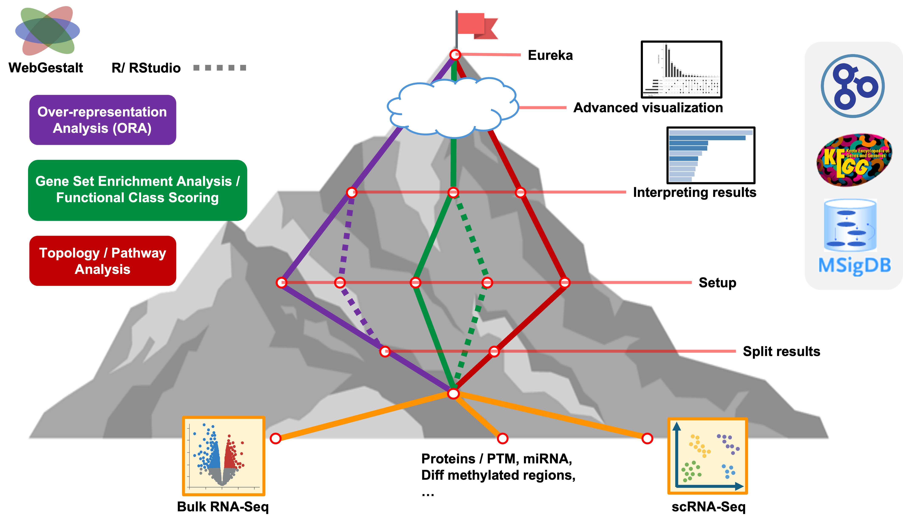

Functional analysis can be a powerful tool for summarizing differential expression results from a variety of experiments, including both bulk and single-cell RNA-seq.
What we’ve accomplished:
WebGestaltR to run ORA for bulk
RNA-seq data in a more reproducible manner.WebGestaltR to run GSEA for single-cell RNA-seq
dataKhatri P, Sirota M, Butte AJ. Ten years of pathway analysis: current approaches and outstanding challenges. PLoS Comput Biol. 2012;8(2):e1002375. doi:10.1371/journal.pcbi.1002375 https://pubmed.ncbi.nlm.nih.gov/22383865/
Subramanian A, Tamayo P, Mootha VK, et al. Gene set enrichment
analysis: a knowledge-based approach for interpreting genome-wide
expression profiles. Proc Natl Acad Sci U S A. 2005;102(43):15545-15550.
doi:10.1073/pnas.0506580102
https://pmc.ncbi.nlm.nih.gov/articles/PMC1239896/
Wijesooriya K, Jadaan SA, Perera KL, Kaur T, Ziemann M. Urgent
need for consistent standards in functional enrichment analysis. PLoS
Comput Biol. 2022;18(3):e1009935. Published 2022 Mar 9. doi:10.1371/journal.pcbi.1009935
https://pmc.ncbi.nlm.nih.gov/articles/PMC8936487/
Zyla J, Marczyk M, Weiner J, Polanska J. Ranking metrics in gene set enrichment analysis: do they matter?. BMC Bioinformatics. 2017;18(1):256. Published 2017 May 12. doi:10.1186/s12859-017-1674-0 https://pubmed.ncbi.nlm.nih.gov/28499413/
Topology Pathway Analyses
| Previous lesson | Top of this lesson | Next lesson |
|---|